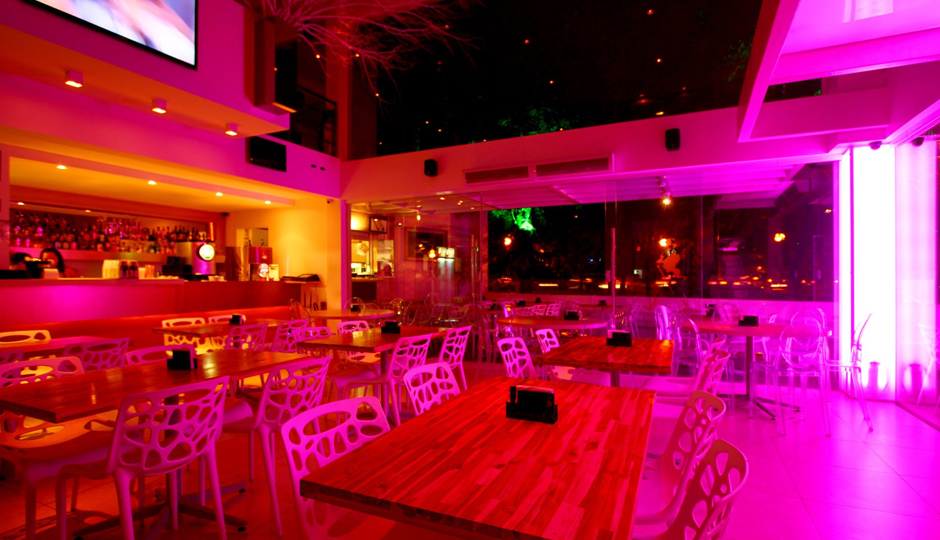
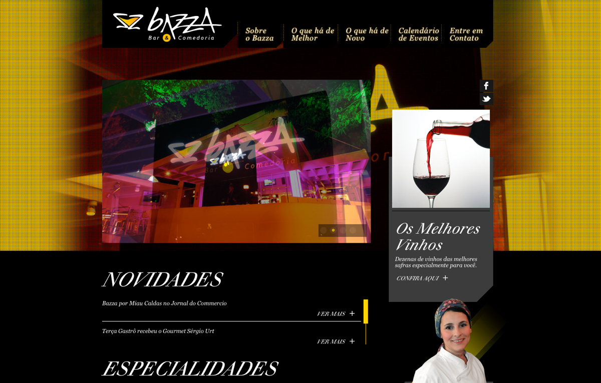
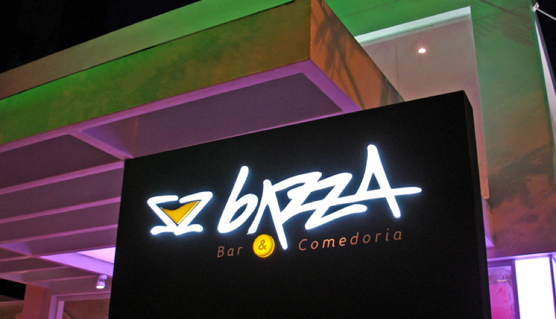

Introduction
Elected by the VEJA magazine, one of the most important Brazilian guides of the best restaurants around the country, as the best new restaurant of 2012 in Recife, Bazza Bar & Comedoria is a sophisticated venue, ideal for those who enjoy the best of contemporary cuisine combined with good music. Bazza is a place to bring the family for dinner and meet friends for a casual night at the sound of guest DJs.
My role
In 2013, I was responsible for the redesign of Bazza’s website based on the business' new strategy. I defined the visual language and user experience, drew wireframes and layouts for the website. I worked alongside a Front-end developer who focused on delivering a better web experience.
Tools and technologies
Illustrator, Photoshop.
Wireframing the interface
My challenge was to renew Bazza’s online presence with a modern and sophisticated website that translate its finest dinning experience. One of the goals was to simplify the sitemap as much as possible, and minimize the number of clicks the user needs to access the main information about the venue. With that in mind, I combined some pages, such as About and Gallery, to provide a fast and more dynamic experience.
Navigation experience
I planned the navigation to help users move through different pages and be engaged with the site content, using it as a storytelling tool. Having in mind that some users prefer keyboard commands for efficiency, the website provides sequential access to the pages.
When landing in on the website for the first time, users are presented to a small walkthrough that shows how to navigate the website intuitively. In addition, it is possible to access the menu options using the mouse by scrolling and clicking on the links.
The Design
In the redesign, I used some existing components as starting point and clean up the main content area to make it more sophisticated and attractive.
Attention to details is heavily embedded on the new website. Smooth animations and interactions bring an elegant appeal to the dark design. To improve redability, since dark designs tend to feel heavy on the eye, I used white space to highlight text and headlines.


The entire visual identity of the website was developed following the simple but yet sophisticated logo.
